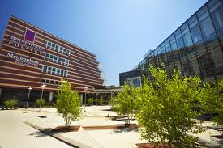
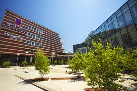

The SkyLightUniversity is pioneer that distinctively contributes to the society in the field of research. Learning and teaching and engagement as a non-profit making organization. The university is one of the best university in asia. we have different courses and oppotunities for our students. SkyLightUniversity provides their student proper guidence and give them the enviournment which is needed for study and improving skills.